PARUL UNIVERSITY INTERNATIONAL CONFERENCE
DISHA 2027
Design · Innovation · Sustainability · Humanities · Arts
Sustainable and Creative Futures across
Design, the Arts and Knowledge Systems
Addressing All 17 UN Goals
22 & 23 January 2027
Parul University, Vadodara


 =======
=======
PARUL UNIVERSITY INTERNATIONAL CONFERENCE
DISHA 2027
Design · Innovation · Sustainability · Humanities · Arts
Sustainable and Creative Futures across
Design, the Arts and Knowledge Systems
22 & 23 January 2027
Parul University, Vadodara
Addressing All 17 UN Goals
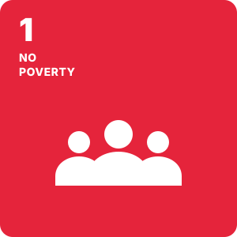
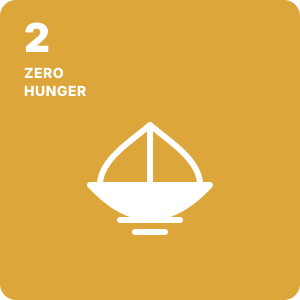
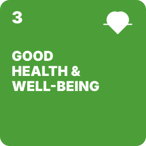
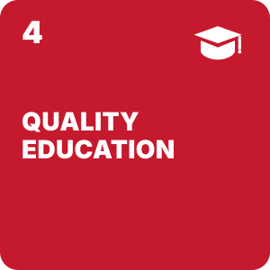
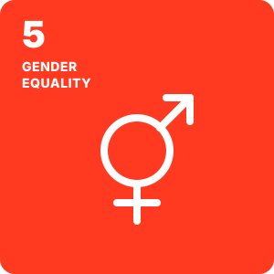
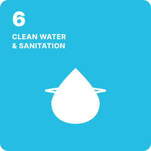
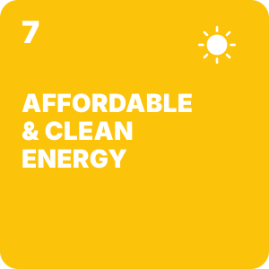
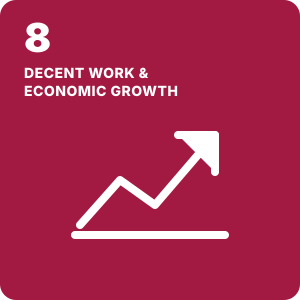
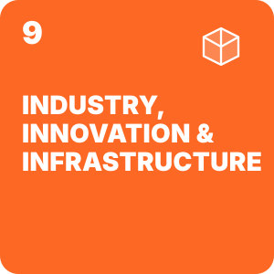
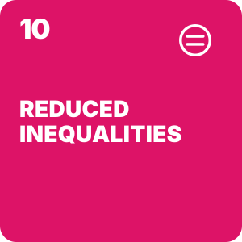
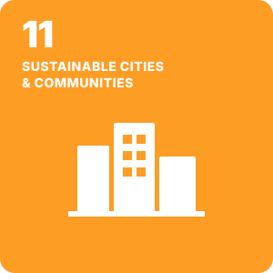
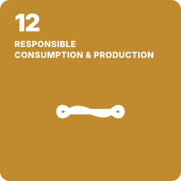
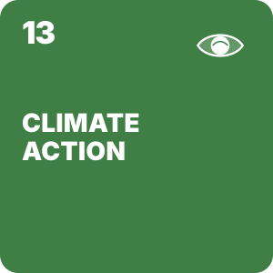
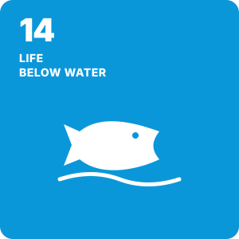
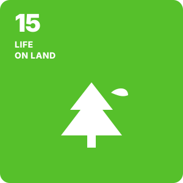
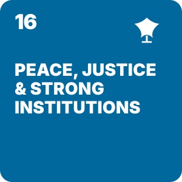
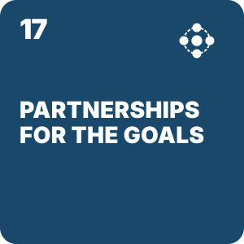
"A bridge does two things at once. It joins what stands apart, and it carries weight. DISHA 2027 is built to do both."
DISHA 2027 reframes the conversation around sustainability, creativity and civilisational knowledge by bringing three creative and intellectual faculties of Parul University, Design, Fine Arts and Liberal Arts, onto a single international stage. Over two days in Vadodara, the conference convenes researchers, designers, artists, scholars, technologists, entrepreneurs and policy thinkers to work out practical pathways towards futures that are sustainable, equitable and culturally rooted.
The conference holds two ideas together rather than choosing between them. In the spirit of Vasudhaiva Kutumbakam, the world as one family, it places India’s long inheritance of knowledge alongside its restless contemporary energy in design, scholarship and technology. Ancient wisdom is not treated as heritage to be admired. It is treated as working material for the problems in front of us.
Contributions are invited across seven research tracks and six cross faculty thematic panels that span design, the visual arts, the humanities, Indian Knowledge Systems, artificial intelligence, creative pedagogy and the study of peace and human futures. Two parallel calls, one academic and one for practice, ensure that the room holds both the paper and the prototype. =======
"A bridge does two things at once. It joins what stands apart, and it carries weight. DISHA 2027 is built to do both."
DISHA 2027 reframes the conversation around sustainability, creativity and civilisational knowledge by bringing three creative and intellectual faculties of Parul University, Design, Fine Arts and Liberal Arts, onto a single international stage. Over two days in Vadodara, the conference convenes researchers, designers, artists, scholars, technologists, entrepreneurs and policy thinkers to work out practical pathways towards futures that are sustainable, equitable and culturally rooted.
The conference holds two ideas together rather than choosing between them. In the spirit of Vasudhaiva Kutumbakam, the world as one family, it places India’s long inheritance of knowledge alongside its restless contemporary energy in design, scholarship and technology. Ancient wisdom is not treated as heritage to be admired. It is treated as working material for the problems in front of us.
Contributions are invited across seven research tracks and six cross faculty thematic panels that span design, the visual arts, the humanities, Indian Knowledge Systems, artificial intelligence, creative pedagogy and the study of peace and human futures. Two parallel calls, one academic and one for practice, ensure that the room holds both the paper and the prototype. >>>>>>> Stashed changes
Why this conference, and why now
<<<<<<< Updated upstream India’s approach to its centenary in 2047 calls for integrated thinking: civilisational wisdom, creative practice, technological innovation and sustainable global leadership, argued together rather than in separate rooms. A multidisciplinary creative conference is unusually well placed to translate that ambition into culture, pedagogy and practice. DISHA 2027 sets out to:
- Turn research and creative practice into implementable strategies for cities, communities, institutions and the creative economy.
- Surface scalable innovations across design, the arts, AI and digital culture that respect social equity and ecological limits.
- Connect academia, government, industry, foundations and community stakeholders through a two call engagement model.
- Strengthen Parul University’s international standing through Cumulus endorsement and a standing Global Advisory Board.
Global alignment
The themes of DISHA 2027 map directly onto Viksit Bharat 2047, the G20 development agenda and the seventeen United Nations Sustainable Development Goals. Cumulus endorsement extends the reach of the conference to a worldwide network of art, design and media institutions across more than seventy countries, and gives accepted work a route into global creative and academic discourse.
Parul University
Parul University, Vadodara, is a NAAC A++ accredited private university in Gujarat, home to a large multidisciplinary campus that spans engineering, medicine, management, design, fine arts, liberal arts, law and the sciences. Its scale allows research questions to travel across faculties, which is precisely the condition DISHA 2027 is designed to exploit.
Parul Institute of Design
Parul Institute of Design teaches and practises across fashion design, fashion merchandising, interior design, product and industrial design, communication design, animation, VFX, film and television. A member institution of the Cumulus Association, PID works at the intersection of craft ecosystems, industry practice and design research, and convenes DISHA 2027.
Parul Institute of Fine Arts
Parul Institute of Fine Arts carries forward the studio traditions of painting, sculpture, printmaking and applied art, with sustained attention to material practice, visual culture and the place of the artist in public life.
Parul Institute of Liberal Arts
Parul Institute of Liberal Arts anchors the conference in critical inquiry. Across literature, philosophy, history, psychology, policy and cultural studies, it serves as the integrative knowledge partner, connecting every track through ethics, communication, language and civilisational thought. ======= India’s approach to its centenary in 2047 calls for integrated thinking: civilisational wisdom, creative practice, technological innovation and sustainable global leadership, argued together rather than in separate rooms. A multidisciplinary creative conference is unusually well placed to translate that ambition into culture, pedagogy and practice. DISHA 2027 sets out to:
- Turn research and creative practice into implementable strategies for cities, communities, institutions and the creative economy.
- Surface scalable innovations across design, the arts, AI and digital culture that respect social equity and ecological limits.
- Connect academia, government, industry, foundations and community stakeholders through a two call engagement model.
- Strengthen Parul University’s international standing through Cumulus endorsement and a standing Global Advisory Board.
Global alignment
The themes of DISHA 2027 map directly onto Viksit Bharat 2047, the G20 development agenda and the seventeen United Nations Sustainable Development Goals. Cumulus endorsement extends the reach of the conference to a worldwide network of art, design and media institutions across more than seventy countries, and gives accepted work a route into global creative and academic discourse. >>>>>>> Stashed changes
Parul University
Parul University, Vadodara, is a NAAC A++ accredited private university in Gujarat, home to a large multidisciplinary campus that spans engineering, medicine, management, design, fine arts, liberal arts, law and the sciences. Its scale allows research questions to travel across faculties, which is precisely the condition DISHA 2027 is designed to exploit.
Parul Institute of Design
Parul Institute of Design teaches and practises across fashion design, fashion merchandising, interior design, product and industrial design, communication design, animation, VFX, film and television. A member institution of the Cumulus Association, PID works at the intersection of craft ecosystems, industry practice and design research, and convenes DISHA 2027.
Parul Institute of Fine Arts
Parul Institute of Fine Arts carries forward the studio traditions of painting, sculpture, printmaking and applied art, with sustained attention to material practice, visual culture and the place of the artist in public life.
Parul Institute of Liberal Arts
Parul Institute of Liberal Arts anchors the conference in critical inquiry. Across literature, philosophy, history, psychology, policy and cultural studies, it serves as the integrative knowledge partner, connecting every track through ethics, communication, language and civilisational thought.